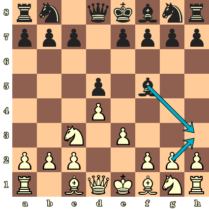

Chess: Bug in Alpha-Beta
I am implementing a chess engine, and I have written a fairly complex alpha- beta search routine with quiescence search and transposition tables. However, I am observing a strange bug.
The evaluation function is using piece-square tables, like this one for pawns:
static int ptable_pawn[64] = {
0, 0, 0, 0, 0, 0, 0, 0,
30, 35, 35, 40, 40, 35, 35, 30,
20, 25, 25, 30, 30, 25, 25, 20,
10, 20, 20, 20, 20, 20, 20, 10,
3, 0, 14, 15, 15, 14, 0, 3,
0, 5, 3, 10, 10, 3, 5, 0,
5, 5, 5, 5, 5, 5, 5, 5,
0, 0, 0, 0, 0, 0, 0, 0
};
When it is black's turn, the table is reflected across the x-axis. Specifically, if you are curious, lookups happen like this, where the columns A-H map to 0-7 and the rows are 0-7 from white's side:
int ptable_index_for_white(int col, int row) { return col+56-(row*8); } int ptable_index_for_black(int col, int row) { return col+(row*8); }
So a pawn on h4 (coordinates 7, 3) is worth 3 points (centipawns) for white, and a pawn on f6 (coord 5, 5) is worth 3 centipawns for black.
The entire evaluation function is currently piece-square tables and material.
At greater search depths, my engine is choosing some genuinely horrible moves. Consider this output, generated from the starting position:
Iterative Deepening Analysis Results (including cached analysis)
Searching at depth 1... d1 [+0.10]: 1.b1c3
(4 new nodes, 39 new qnodes, 0 qnode aborts, 0ms), 162kN/s
Searching at depth 2... d2 [+0.00]: 1.e2e4 d7d5
(34 new nodes, 78 new qnodes, 0 qnode aborts, 1ms), 135kN/s
Searching at depth 3... d3 [+0.30]: 1.d2d4 d7d5 2.c1f4
(179 new nodes, 1310 new qnodes, 0 qnode aborts, 4ms), 337kN/s
Searching at depth 4... d4 [+0.00]: 1.g1f3 b8c6 2.e2e4 d7d5
(728 new nodes, 2222 new qnodes, 0 qnode aborts, 14ms), 213kN/s
Searching at depth 5... d5 [+0.20]: 1.b1a3 g8f6 2.d2d4 h8g8 3.c1f4
(3508 new nodes, 27635 new qnodes, 0 qnode aborts, 103ms), 302kN/s
Searching at depth 6... d6 [-0.08]: 1.d2d4 a7a5 2.c1f4 b7b6 3.f4c1 c8b7
(21033 new nodes, 112915 new qnodes, 0 qnode aborts, 654ms), 205kN/s
Searching at depth 7... d7 [+0.20]: 1.b1a3 g8f6 2.a1b1 h8g8 3.d2d4 g8h8 4.c1f4
(39763 new nodes, 330837 new qnodes, 0 qnode aborts, 1438ms), 258kN/s
Searching at depth 8... d8 [-0.05]: 1.e2e4 a7a6 2.e4e5 a6a5 3.h2h4 d7d6 4.e5d6 c7d6
(251338 new nodes, 2054526 new qnodes, 0 qnode aborts, 12098ms), 191kN/s
At depth 8, notice that black opens with the moves "... a7a6 ... a6a5," which are horrible according to the piece-square table. Additionally, "h2h4" is a horrible move for white. Why is my search function choosing such bizarre moves? It's notable that this only starts happening at greater depths (the moves at depth 3 look fine).
Moreover, the search often blunders away pieces! Consider the following position:

The engine recommends a horrific blunder (3... f5h3), somehow missing the obvious reply (4. g2h3):
Searching at depth 7... d7 [+0.17]: 3...f5h3 4.e3e4 h3g4 5.f2f3 g8f6 6.e4d5 f6d5
(156240 new nodes, 3473795 new qnodes, 0 qnode aborts, 17715ms), 205kN/s
Quiescence search isn't involved, since the blunder happens at ply 1 (!!).
Here is the code for my search functions. I'm sorry it's so lengthy: I simplified as best I could, but I can't know which parts are irrelevant to the bug. I assume my algorithm is somehow subtly wrong.
The implementation is based on this one from Wikipedia, almost exactly. (Update: I have significantly simplified the search, and my bug is still present.)
// Unified alpha-beta and quiescence search int abq(board *b, int alpha, int beta, int ply) { pthread_testcancel(); // To allow search worker thread termination bool quiescence = (ply <= 0); // Generate all possible moves for the quiscence search or normal search, and compute the // static evaluation if applicable. move *moves = NULL; int num_available_moves = 0; if (quiescence) moves = board_moves(b, &num_available_moves, true); // Generate only captures else moves = board_moves(b, &num_available_moves, false); // Generate all moves if (quiescence && !useqsearch) return relative_evaluation(b); // If qsearch is turned off // Abort if the quiescence search is too deep (currently 45 plies) if (ply < -quiesce_ply_cutoff) { sstats.qnode_aborts++; return relative_evaluation(b); } // Allow the quiescence search to generate cutoffs if (quiescence) { int score = relative_evaluation(b); alpha = max(alpha, score); if (alpha >= beta) return score; } // Update search stats if (quiescence) sstats.qnodes_searched++; else sstats.nodes_searched++; // Search hueristic: sort exchanges using MVV-LVA if (quiescence && mvvlva) nlopt_qsort_r(moves, num_available_moves, sizeof(move), b, &capture_move_comparator); move best_move_yet = no_move; int best_score_yet = NEG_INFINITY; int num_moves_actually_examined = 0; // We might end up in checkmate for (int i = num_available_moves - 1; i >= 0; i--) { // Iterate backwards to match MVV-LVA sort order apply(b, moves[i]); // never move into check coord king_loc = b->black_to_move ? b->white_king : b->black_king; // for side that just moved if (in_check(b, king_loc.col, king_loc.row, !(b->black_to_move))) { unapply(b, moves[i]); continue; } int score = -abq(b, -beta, -alpha, ply - 1); num_moves_actually_examined++; unapply(b, moves[i]); if (score >= best_score_yet) { best_score_yet = score; best_move_yet = moves[i]; } alpha = max(alpha, best_score_yet); if (alpha >= beta) break; } // We have no available moves (or captures) that don't leave us in check // This means checkmate or stalemate in normal search // It might mean no captures are available in quiescence search if (num_moves_actually_examined == 0) { if (quiescence) return relative_evaluation(b); // TODO: qsearch doesn't understand stalemate or checkmate coord king_loc = b->black_to_move ? b->black_king : b->white_king; if (in_check(b, king_loc.col, king_loc.row, b->black_to_move)) return NEG_INFINITY; // checkmate else return 0; // stalemate } // record the selected move in the transposition table evaltype type = (quiescence) ? qexact : exact; evaluation eval = {.best = best_move_yet, .score = best_score_yet, .type = type, .depth = ply}; tt_put(b, eval); return best_score_yet; } /* * Returns a relative evaluation of the board position from the perspective of the side about to move. */ int relative_evaluation(board *b) { int evaluation = evaluate(b); if (b->black_to_move) evaluation = -evaluation; return evaluation; }
I am invoking the search like this:
int result = abq(b, NEG_INFINITY, POS_INFINITY, ply);
Edit: The bug persists even when I have simplified the search routine. The engine simply blunders away pieces. You can see this easily by loading it in XBoard (or any other UCI-compatible GUI) and playing it against a strong engine. At manlio's request, I have uploaded the code:
Here is the GitHub repository (link removed; problem was in snippet above). It will build using "make" on OS X or any *nix system.
Answer
if (score >= best_score_yet) {
should be:
if (score > best_score_yet) {
or you're going to consider bad moves. The first best_move_yet will be
correct (since best_score_yet = NEG_INFINITY) but other moves with score ==
best_score_yet aren't necessarily better.
Changing that line:
Starting position
Iterative Deepening Analysis Results (including cached analysis) Searching at depth 1... d1 [+0.10]: 1.e2e4 (1 new nodes, 4 new qnodes, 0 qnode aborts, 0ms, 65kN/s) (ttable: 1/27777778 = 0.00% load, 0 hits, 0 misses, 1 inserts (with 0 overwrites), 0 insert failures) Searching at depth 2... d2 [+0.00]: 1.e2e4 g8f6 (21 new nodes, 41 new qnodes, 0 qnode aborts, 0ms, 132kN/s) (ttable: 26/27777778 = 0.00% load, 0 hits, 0 misses, 25 inserts (with 0 overwrites), 0 insert failures) Searching at depth 3... d3 [+0.30]: 1.d2d4 g8f6 2.c1f4 (118 new nodes, 247 new qnodes, 0 qnode aborts, 5ms, 73kN/s) (ttable: 187/27777778 = 0.00% load, 0 hits, 0 misses, 161 inserts (with 0 overwrites), 0 insert failures) Searching at depth 4... d4 [+0.00]: 1.e2e4 g8f6 2.f1d3 b8c6 (1519 new nodes, 3044 new qnodes, 0 qnode aborts, 38ms, 119kN/s) (ttable: 2622/27777778 = 0.01% load, 0 hits, 0 misses, 2435 inserts (with 0 overwrites), 1 insert failures) Searching at depth 5... d5 [+0.10]: 1.g2g3 g8f6 2.f1g2 b8c6 3.g2f3 (10895 new nodes, 35137 new qnodes, 0 qnode aborts, 251ms, 184kN/s) (ttable: 30441/27777778 = 0.11% load, 0 hits, 0 misses, 27819 inserts (with 0 overwrites), 0 insert failures) Searching at depth 6... d6 [-0.08]: 1.d2d4 g8f6 2.c1g5 b8c6 3.g5f6 g7f6 (88027 new nodes, 249718 new qnodes, 0 qnode aborts, 1281ms, 264kN/s) (ttable: 252536/27777778 = 0.91% load, 0 hits, 0 misses, 222095 inserts (with 0 overwrites), 27 insert failures) Searching at depth 7... d7 [+0.15]: 1.e2e4 g8f6 2.d2d4 b8c6 3.d4d5 c6b4 4.g1f3 (417896 new nodes, 1966379 new qnodes, 0 qnode aborts, 8485ms, 281kN/s) (ttable: 1957490/27777778 = 7.05% load, 0 hits, 0 misses, 1704954 inserts (with 0 overwrites), 817 insert failures)
While in the test position:
Calculating... Iterative Deepening Analysis Results (including cached analysis) Searching at depth 1... d1 [+2.25]: 3...g8h6 4.(q)c3d5 (q)d8d5 (1 new nodes, 3 new qnodes, 0 qnode aborts, 0ms, 23kN/s) (ttable: 3/27777778 = 0.00% load, 0 hits, 0 misses, 3 inserts (with 0 overwrites), 0 insert failures) Searching at depth 2... d2 [-0.13]: 3...f5e4 4.c3e4 (q)d5e4 (32 new nodes, 443 new qnodes, 0 qnode aborts, 3ms, 144kN/s) (ttable: 369/27777778 = 0.00% load, 0 hits, 0 misses, 366 inserts (with 0 overwrites), 0 insert failures) Searching at depth 3... d3 [+0.25]: 3...g8h6 4.c3e2 h6g4 (230 new nodes, 2664 new qnodes, 0 qnode aborts, 24ms, 122kN/s) (ttable: 2526/27777778 = 0.01% load, 0 hits, 0 misses, 2157 inserts (with 0 overwrites), 0 insert failures) Searching at depth 4... d4 [-0.10]: 3...g8f6 4.e3e4 f5e6 5.f1b5 (2084 new nodes, 13998 new qnodes, 0 qnode aborts, 100ms, 162kN/s) (ttable: 15663/27777778 = 0.06% load, 0 hits, 0 misses, 13137 inserts (with 0 overwrites), 2 insert failures) Searching at depth 5... d5 [+0.15]: 3...g8f6 4.f1e2 h8g8 5.g2g4 f5e4 6.(q)c3e4 (q)f6e4 (38987 new nodes, 1004867 new qnodes, 0 qnode aborts, 2765ms, 378kN/s) (ttable: 855045/27777778 = 3.08% load, 0 hits, 0 misses, 839382 inserts (with 0 overwrites), 302 insert failures)
Suggest
I'd be happy to take a look at the actual repo, but I've experienced this exact problem many times implementing similar game playing algorithms. I'll tell you what was causing the problems for me and you can check if you're making the same mistakes. These are listed in the order in which I would guess is most likely to solve your problem.
Plys are not moves, moves should increase by 2 each iteration (that's what
a ply is)
This mistake is almost always indicated by making poor choices for almost every move for the first player because they can never see the consequence of making a bad move. The way you avoid this is by increasing moves by 2 (or more generally by the number of players in the game, but you're using minmax so it's 2). This ensures each player always looks for consequences up to their next turn.
The evaluation must always be made from the standpoint of the current
player
This one sounds obvious but I swear I screw this every time I implement an evaluation function. When designing an evaluation, we always design it that way from the standpoint of the first player to play, when what we should be doing is designing it to return the evaluation of the current player. We can tell which player's turn it is because we have the full board state, so there is no need to pass it in.
This is especially hard to debug if your evaluate call isn't the first call in your minmax function, but you've implemented it that way, so this isn't an issue.
The evaluation function must be symmetric
This is an especially nasty bug when it happens. The idea is that the same player would evaluate the same position differently depending on whether they were winning or losing.
Take for example in chess where as the winning player, you want to win the fewest number of moves, but if you're going to lose, you want to lose in the longest number of moves. A typical solution for this is to say if you're going to win, add a bonus for winning in a smaller number of moves, but if you're going to lose, add a bonus for longer sequences. This results in adding a bonus for the opposite reasons depending on situation, and removes the symmetry from the evaluation such that Player A not equal -Player B. When you lose this symmetry, you can no longer just pass values back up the game tree, you have to re-evaluate them at each step.
But the trick is that doing adjustments like this is always wrong. With a deep static evaluation, it will simply cut off early if it finds a guaranteed win. With iterative deepening solutions it will still find the earlier win first. A mate in 5 is never a mate in 4 unless the opponent blunders, so adjustments like this are never needed.
Double check that you are not having collisions with your transposition
table
I cannot see the implementation of your transposition table, but if you are dealing with more states than you have allotted to store, then you have to ensure that it is the same position before you trust the value. I doubt this is a problem since it looks like you're only looking at a few million nodes, but it's always good to double check. Additionally, make sure your hash function is sufficiently random to avoid regular collisions.
mtd_f should not consult the transposition table
mtd_f is a passthrough function that will handle the transposition table
correctly on the first call to negamax. You are improperly using the value
from it as it is implemented now, but just removing that code will clean up
the implementation and handle it correctly. Additionally, you should pass the
evaluation to the mtd_f function on each iteration, not attempt to load it
each time.